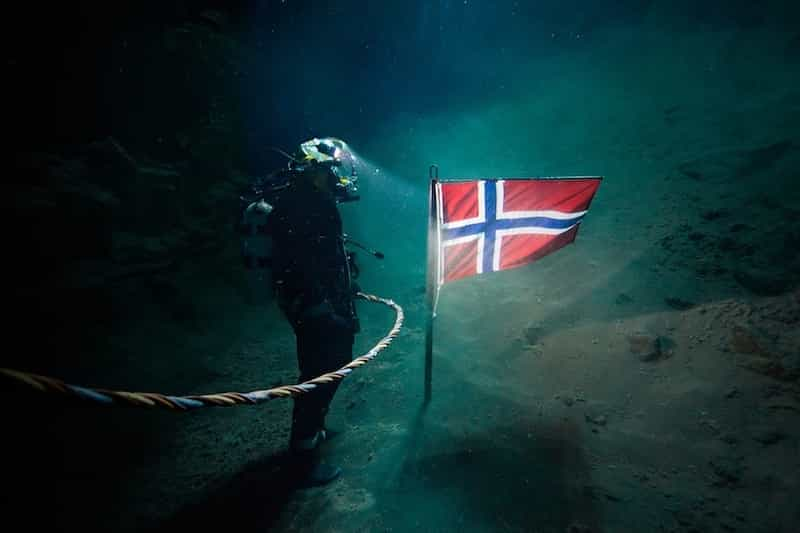

Norway is known for its large oil funds, high standard of living, majestic fjords, and maybe a little bit too much diversity and progressivism for its own good (but at least not as bad as Sweden, Germany or France).
But there are indeed incentives for a man to go there, at least short-term or semi-permanently, since the wages are very high and quality of life largely match up the level of income. For sure it is extremely expensive as well, but if one makes a concrete income/cost analysis, it is obvious that the net savings can be quite high anyway.
As a Swedish man who has worked there for a while, visited multiple times, and have numerous friends who have resided or live there now, I will shed light on some of the main reasons why a man might consider to work and live in Norway, temporary or semi-permanently.
National characteristics
Norway is located in Scandinavia in Northern Europe, neighboring Sweden and Denmark, with about 5 million inhabitants. The World Factbook describes the climate as…
…temperate along coast, modified by North Atlantic Current; colder interior with increased precipitation and colder summers; rainy year-round on west coast.
Smaller cities like Bergen, Trondheim and Ålesund on the west coast suffer from regular downpours, although the summers can be fairly pleasant.

Politically and economically, Norway is a predominantly social-democratic society with a large welfare sector. In tandem with the large wealth, primarily from oil revenues, this leads to a relatively low work ethic, at least from the basis of being a Germanic country. On the other hand, the societal trust is high and crime is low outside a couple of “vibrant” parts of the capital Oslo.
Compared to Sweden, Norway is also patriotic, which is manifested on 17 May when the Norwegian Constitution Day is celebrated. Feminism is quite widespread but that is mostly in the urban areas.
The female stock is made up of a significant share of relatively tall women (many younger girls are 5’7″ to 5’9″) who are semi-chubby, but a large portion are slim and petite. Combined with a typical Scandinavian look, this implies that some chicks are extremely pretty: here a man will find 9s once in a while and a steady supply of 7s and 8s.
As a consequence of mass immigration, a man will also meet women from Eastern Europe, the Middle East, South America and East Asia as well. Combined with the fact that many Norwegian men – this of course excludes ROK readers – are chubby betas, it is safe to say that the general competition is low, even though some guys also are really handsome.

Language barriers
Norwegian is part of the northern branch of the larger Germanic branch of the Indo-European language tree. This means that it is very similar to Swedish and Danish – as a Swede I understand roughly 90% of all words – and many are similar to English, Dutch and German as well.
I am not suggesting that it is a super-smooth process to learn Norwegian, but far from as difficult as to deal with let’s say Korean or Russian (so it appears, since I have never learned a Slavic language). Since Norwegian people tend to speak relatively decent English, you should have no problem of being linguistically integrated there, especially if you work in a more international company in which the bulk of staff communicate through English.
Work permits, wages and accommodation
If a man is a citizen of a EU and/or EEA country, a work permit may not even be required. However, an American citizen might need one. Examples of seasonal work are forestry, agriculture and horticulture, fish processing, the restaurant industry, and the tourism industry.
In this regard it is wise to live in a shared apartment and have a semi-austere lifestyle. Norway is very expensive and if you indulge in alcohol, food, shopping, and other hedonistic pursuits you have to say hei da (good bye in Norwegian) to the bulk of your savings. The monthly cost for a room in a shared apartment in for example Bergen is somewhere between about 340-530 US dollars. A one bedroom apartment costs about 1100 US dollars.
On the other hand, a man with some discipline can earn and save a lot in just 6 months or so. For instance, in the fish process industry workers earn 162 Norwegian kronor, roughly 21 dollars per hour. Given that you work about 160 hours per month, this salary translates into roughly 2300 post-tax US dollars, but you can easily work much more than 160 hours in many sectors. Thus expect at least 9000 US dollars in net savings from 6 months of work in locations like Oslo, Trondheim, Bergen, Stavanger, Tromsø and Ålesund.
A man who works in engineering, computer engineering, or finance can easily double or triple that amount, even accounting for higher expenses for food and accommodation. One of the riskiest but also most well-paid occupations is offshore diving, which comes with a gross income of about 70-80 000 annually.

Sightseeing
The towns and cities in Norway are generally not that interesting, but Tromsø and Ålesund are quite unique, picturesque, and definitely worth a visit. The same is the case with the Geirangerfjord. It is expensive to travel domestically, so be prepared or go with car and bring a tent if you want to save money.
I will also recommend mountain hiking or a trip to Iceland, located about 2 hours and 40 minutes from Norwegian flight hubs like Oslo.

In summary
Needless to say, there are pros and cons from working overseas if one has a first-world country as a starting point. Why go to Norway or Switzerland when one can work in the United States, UK, Canada, Australia or Germany? I think part of the key lies in the whole new experience in conjunction with having the opportunity to save a large sum of money and date an exotic who are tired of their men.
Read More: 10 Reasons Why Switzerland May Be The Best Country In The World